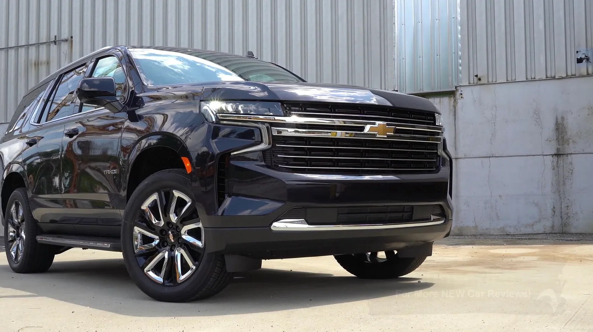
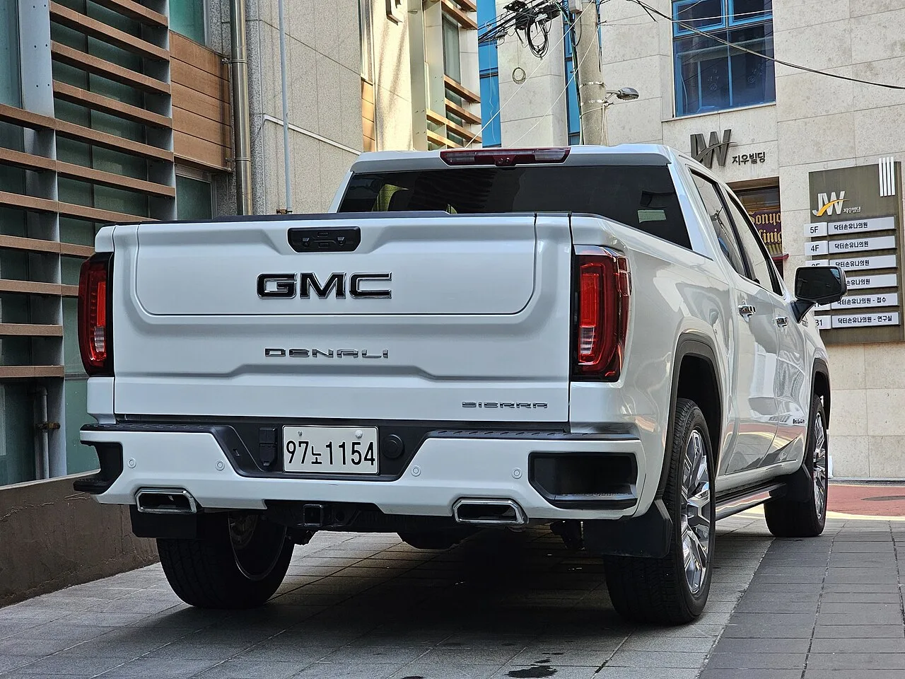

▲ 쉐보레 타호. 6.2리터 V8 L87을 얹는 GM 풀사이즈 라인업이 이번 조사 대상에 포함됐다 ⓒ Wikimedia Commons
리콜은 문제를 끝내기 위한 절차입니다. 결함을 확인하고, 수리 방법을 정하고, 해당 차량을 불러 고칩니다.
GM의 6.2리터 V8은 그 절차를 이미 한 번 거쳤습니다. 그런데 수리를 받은 차들이 다시 고장 났다는 신고가 쌓였고, 미국 규제 당국이 수리 자체를 조사 대상으로 올렸습니다.
1. 무슨 조사인가
미국 도로교통안전국(NHTSA) 산하 결함조사국(ODI)이 8월 20일 엔지니어링 분석(Engineering Analysis) EA26005를 개시했습니다.
📍 '엔지니어링 분석'의 위치
NHTSA의 결함 조사는 단계가 있습니다. 먼저 예비평가(PE)로 신고를 검토하고, 사안이 중대하면 엔지니어링 분석(EA)으로 올립니다.
EA는 리콜 권고 직전 단계입니다. 여기서 결함이 확인되면 제조사에 리콜을 요구하게 됩니다. 이번 사안이 EA로 시작됐다는 것은 이미 상당한 근거가 쌓였다는 뜻입니다.
2. 690건이라는 신규 사례
조사를 촉발한 것은 두 갈래의 신고입니다.
| 유형 | 건수 |
|---|---|
| 리콜 수리 후 재고장 | 499건 |
| 리콜 25V-274 범위 밖 엔진 고장 | 191건 |
| 합계 | 690건 |
두 숫자가 겨냥하는 지점이 다릅니다. 499건은 수리 방법이 효과가 있었는지를 묻습니다. 191건은 리콜 대상 범위가 옳게 그어졌는지를 묻습니다.
어느 쪽이든 결론은 같은 방향으로 갑니다. 기존 리콜이 문제를 끝내지 못했다는 것입니다.

▲ GMC 시에라 드날리. 6.2리터 V8은 GM 풀사이즈 픽업·SUV의 상위 트림에 얹히는 엔진이다 ⓒ GMC
3. 원래 리콜은 무엇이었나
기존 리콜은 25V-274입니다. 대상은 2021년 3월 1일부터 2024년 5월 31일까지 제작된 일부 L87 엔진이었습니다.
당시 지목된 원인은 커넥팅 로드와 크랭크샤프트의 제조 문제였습니다. 두 부품 모두 엔진 하부의 회전·왕복 운동을 담당하는 핵심 요소입니다.
📍 커넥팅 로드가 부러지면
커넥팅 로드는 피스톤의 상하 운동을 크랭크샤프트의 회전으로 바꾸는 막대입니다. 이 부품이 파손되면 엔진 블록을 뚫고 나가는 경우가 있습니다.
이 상태에서는 오일이 순식간에 빠져나가고, 주행 중이라면 구동력이 즉시 사라집니다. 고속도로에서 발생하면 위험한 상황이 됩니다. 규제 당국이 엔진 파손을 안전 문제로 다루는 이유입니다.
4. 어떤 차들이 걸려 있나
L87은 GM의 풀사이즈 픽업·SUV 상위 트림에 들어가는 엔진입니다. 조사 대상에 포함된 대표 모델은 다음과 같습니다.
| 브랜드 | 모델 |
|---|---|
| 캐딜락 | 에스컬레이드 |
| 쉐보레 | 실버라도 1500 · 타호 · 서버번 |
| GMC | 유콘 · 시에라 1500 |
모두 GM의 수익성이 가장 높은 차종입니다. 에스컬레이드와 드날리 계열은 대당 판매가가 1억 원을 넘습니다. 조사 결과가 리콜로 이어질 경우 비용 부담이 작지 않습니다.

▲ 쉐보레 타호. GM 풀사이즈 SUV는 대당 이익이 큰 대신, 결함이 발생했을 때의 비용도 크다 ⓒ Wikimedia Commons
5. 100만 대에 가까운 규모
조사 대상은 997,743대입니다. 아직 리콜이 아니라 조사 단계이지만, 규모 자체가 사안의 무게를 말해줍니다.
연식 범위도 넓습니다. 2021년형부터 2026년형까지 6개 연식이 포함됩니다. 기존 리콜이 2024년 5월까지 제작분을 대상으로 했던 것과 비교하면, 이후 생산분까지 조사 범위에 들어왔다는 점이 달라진 부분입니다.
6. 해당 차량 소유자는 무엇을 해야 하나
조사 단계에서는 별도 조치가 요구되지 않습니다. 리콜이 아니기 때문에 무상 수리 대상도 아직 아닙니다.
다만 엔진 이상의 전조는 알아둘 필요가 있습니다. 공회전 시 금속성 타격음, 가속 시 진동 증가, 오일 소모 증가가 대표적입니다. 이런 증상이 나타나면 주행을 이어가기보다 점검을 받는 편이 안전합니다.
이미 리콜 수리를 받은 차량이라도 재발 신고가 499건 접수됐다는 점은 기억해둘 만합니다.

▲ 대형 픽업은 견인 등 고부하 주행 비중이 높아 엔진에 걸리는 부담도 크다 ⓒ GMC
7. 정리
NHTSA 결함조사국이 8월 20일 GM의 자연흡기 6.2리터 V8 L87 엔진에 대한 엔지니어링 분석 EA26005를 개시했습니다. 대상은 2021~2026년형 997,743대입니다.
핵심은 기존 리콜의 실효성입니다. 리콜 수리를 받고도 엔진이 고장 났다는 신고가 499건, 리콜 25V-274 범위 밖에서 제작된 엔진의 고장 신고가 191건으로 신규 사례가 690건에 이릅니다.
원 리콜은 2021년 3월부터 2024년 5월까지 제작된 엔진을 대상으로 했고, 원인은 커넥팅 로드와 크랭크샤프트의 제조 문제로 지목됐습니다. 조사 대상에는 캐딜락 에스컬레이드, 쉐보레 실버라도 1500, GMC 유콘 등 수익성 높은 모델이 포함됩니다.